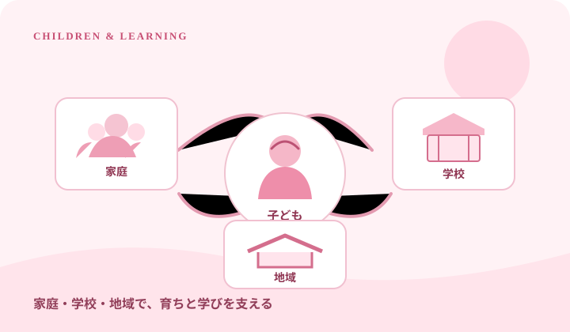

OUR APPROACH
この政策で大切にすること
目指す方向だけでなく、実現するための方法や課題もあわせて考えます。
子育ての負担を軽く
子育てに必要な費用やサービスへのアクセスを見直し、必要な支援が家庭に届く仕組みを考えます。
学びの機会を広げる
家庭の経済状況によって学習の機会が狭まらないよう、教育費の負担軽減や学習支援のあり方を検討します。
地域で子どもを支える
学校・家庭・地域が連携し、放課後の居場所や相談先など、子どもと保護者を支える環境づくりを進めます。
POLICY IN PICTURES
子育て・教育をイメージと図解で見る
政策のテーマを写真で伝え、取り組みのつながりを図で整理しました。
子どもの育ちと学びを支える

WHAT WE PROPOSE
具体的に取り組むこと
次の項目を中心に、効果・財源・実施方法を整理し、分かりやすく説明していきます。
- 01
子育て世帯が利用できる支援制度を整理し、申請や相談をしやすくする。
- 02
教育費の負担を軽くする方法を検討し、支援が必要な子どもに学ぶ機会が届くようにする。
- 03
保育や放課後の支援など、地域ごとの需要に応じた子育て環境を整える。
- 04
保護者の働き方と子どもの生活の両立を支え、学校現場や家庭の声を政策に反映する。
IMPLEMENTATION
実現に向けて確かめること
政策は掲げるだけでなく、実行できるか、生活にどのような影響が出るかを確かめることが重要です。
必要な家庭に届くこと
一律の制度だけでなく、家庭の状況や地域の違いにも目を向けます。
現場の負担
制度を増やすことで学校や保育現場の事務負担が過度に増えないようにします。
長期的な支援
一時的な給付だけでなく、育ちや学びを継続して支えられる仕組みを検討します。
掲載内容について
このページはScratch上で展開する架空の政党プロジェクト「松菱民主党」の政策案です。実在する国政政党・公的機関の政策ではありません。制度の詳細、財源、効果、課題については今後も具体的に検討する必要があります。